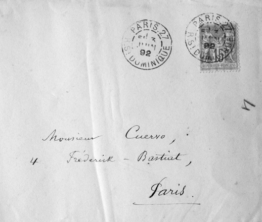

Martínez, Fernando Antonio. Primer continuador de la redacción del Diccionario, inicia el estudio preliminar de las Obras de Cuervo diciendo: “Nada, aparentemente, pudiera haber hecho creer que llegaría a destacarse con perfiles tan recios, casi heroicos, como los que la posteridad le ha reconocido. Hijo de una época de trastornos sociales y políticos y crecido en una atmósfera impropicia de hecho a la meditación y al estudio, todo pudiera hacer pensar que el que después había de ser uno de los grandes filólogos del siglo xix, difícilmente lograría superar las contingencias de la historia, el ambiente y la educación dominantes en su patria. Sin embargo, así fue. Y este esfuerzo solitario y desmesurado debe reconocerse como una de las virtudes del hombre que, venciendo los obstáculos más diversos, encarnó y transformó la sabiduría de su tiempo, dentro de las fronteras de su tierra, y la conformó a criterios y normas plenamente científicos”[1].
Menéndez Pelayo, Marcelino. El ilustre director de la Real Academia Española, en carta a Cuervo, hablando de las Apuntaciones y del Diccionario, dice: “Esta obra que para usted no ha sido más que un pasatiempo, y que es sin duda un recreo sabrosísimo para todos los amantes de las bellezas de nuestra habla (puesto que usted no escribe solamente para los bogotanos ni para los colombianos en general ni para los americanos, sino que usted instruye y adoctrina a todos los que hablamos y escribimos el castellano en ambos mundos), acaba de darme idea de lo que será ese monumental diccionario que usted prepara, y cuyas primicias han llenado de admiración a los pocos que entre nosotros tienen autoridad en estas materias. Dios dé a usted vida, salud y alientos para llevar a cumplido remate y perfección ese opus magnum, como de todo corazón lo desea su afectísimo y admirador q. b. s. m. –M. Menéndez Pelayo”[2].
Menéndez Pidal, Ramón. El maestro de maestros de la filología española, fue amigo y corresponsal de Cuervo, también amigo del Instituto Caro y Cuervo. El instituto pretendía celebrar el centenario de Ramón Menéndez Pidal en vida, con la edición de su correspondencia con Cuervo, pero infortunadamente murió unos meses antes, lo que obligó a editar la correspondencia de Cuervo-Menéndez Pidal, inmemoriam. Por ser relativamente pequeña y por darle mayor difusión esta correspondencia se publicó en Thesaurus, (tomo xxiii de 1968).
Merchán, Rafael María. Nació en Manzanillo, Cuba, en 1844 y murió en Sesquilé, Cundinamarca, en 1905, José Martí calificó de “pluma de oro” a su compatriota que fue delegado del Partido Revolucionario Cubano, en busca de apoyo a la causa revolucionaria de la Isla en los países latinoamericanos. Se radicó en Colombia desde 1874 y conoció a Cuervo en Bogotá. En 1879 comenta con grandes elogios las Apuntaciones. En carta a Cuervo del 29 de noviembre de 1887 le comunica: “Tengo que explicarle por qué no le he acusado recibo del primer tomo de su Monumento, que es como debería llamarse su Diccionario… Pero si soy el último en felicitar a U., por su valiosísimo trabajo, he sido el primero en admirarlo, y el más entusiasta de sus amigos por la gloria inmortal de que está U., llenándose, y llenando a Colombia. Ese es un libro que nunca envejecerá, mientras se hable la lengua castellana en el mundo. Pasma, realmente, lo que U., ha hecho. Si no se tratase más que de paciencia, con eso solo habría para considerarlo a U., el más laborioso de todos los benedictinos habidos y por haber; pero lo que vale más que la paciencia, es su juicio tan seguro, su criterio tan sólido, su erudición tan maciza… No hallo términos que expresen suficientemente lo que pienso y siento cada vez que tomo en manos el Diccionario. Ya lo he consultado varias veces, y siempre con fruto”[3].
Mir, Miguel. Al tener en su mano el tomo primero del Diccionario de Cuervo, le escribe a Cuervo: “¿Qué palabras pueden ser bastantes a expresar la admiración que me causa la vista de su grandioso trabajo? Es este un monumento de tal índole, que al contemplarle enmudece la lengua y se suspende la inteligencia. Declaro ingenuamente: yo no sé cómo se las ha arreglado usted para hacer lo que ha hecho. Conozco lo que pueden la afición y el entusiasmo, veo lo que da de sí el tiempo; pero jamás había imaginado que el entusiasmo y el tiempo y la paciencia y todas las demás cualidades que resplandecen en su diccionario fuesen capaces de llevar a efecto la obra por usted emprendida. Pero ahí está, ahí la vemos y la tocamos, y no hay sino rendirse a la evidencia”[4].
Modestia de Cuervo. Una de las virtudes de Cuervo era su modestia. Menéndez Pidal en carta a Pedro Fabo le comenta: “Recuerdo haber oído a Gastón París quejarse de que la extrema modestia de Cuervo acarreaba pequeñas dificultades en su trato, si bien estas añadiesen simpatía y veneración hacia el ilustre colombiano. De esa modestia provenían las dos inexactitudes manifiestas que Cuervo cometía a veces en sus apreciaciones: de un lado su benevolencia frecuentemente excesiva al juzgar las obras de los demás, y de otra parte el severo despego con que hablaba de los trabajos propios”[5].
Montes Giraldo, José Joaquín. Nació en Manzanares, Caldas, en 1926. Destacado estudioso y conocedor de la obra de R. J. Cuervo. Formó parte del Comité de revisión final de las monografías del dcr. Fue investigador yjefe del Departamento de Dialectología del Instituto Caro y Cuervo, por más de 40 años. Es miembro de número de la Academia Colombiana. Es una de las más reconocidas autoridades en el campo de la dialectología hispanoamericana; formó parte del equipo de redactores y editores del Atlas lingüístico-etnográfico de Colombia, aLec, obra cumbre de la dialectología hispánica. La obra de Montes Giraldo abarca numerosos títulos y es un riguroso testimonio de múltiples estudios que enriquecen el panorama de la lingüística, la lexicografía y la dialectología colombianas e hispanoamericanas.
Muestra de un diccionario de la lengua castellana. En 1871 Cuervo publica con Venancio González Manrique la Muestra de un diccionario de la lengua castellana, que se convierte en semillero de reflexiones sobre la disciplina lexicográfica y el antecedente inmediato de su magna obra. La práctica paciente de la labor lexicográfica de R. J. Cuervo comienza con la Muestra que, como su nombre lo indica, es una pequeña colección de artículos lexicográficos, trece en total: siete de la letra L, redactados por González Manrique y seis de la letra O redactados por Cuervo, tomados sin particular elección de dos letras distintas de un Diccionario de la Lengua Castellana, que permiten señalar las características globales de un pretendido Diccionario general. La Muestra se inspiró como una crítica a los diccionarios de la lengua castellana de la época que apenas si dedicaban un par de renglones al estudio de cada entrada léxica. Nuestros autores, a la manera de diccionarios con que ya contaban el francés y el inglés, pretendían para el castellano el mejor de los diccionarios. Hacer de cada artículo la monografía más completa que de cada entrada se hubiera hecho en diccionario alguno.
* * *
[1] Martínez, en Cuervo, 1987, i, xiii.
[2] Anuario, xi, 151.
[3] aec, xxiii, 207-208.
[4] Anuario, xi, 152-153.
[5] Anuario, xi, 150.